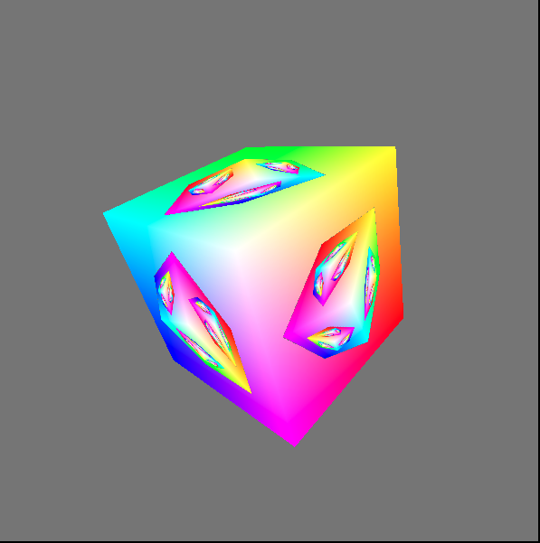
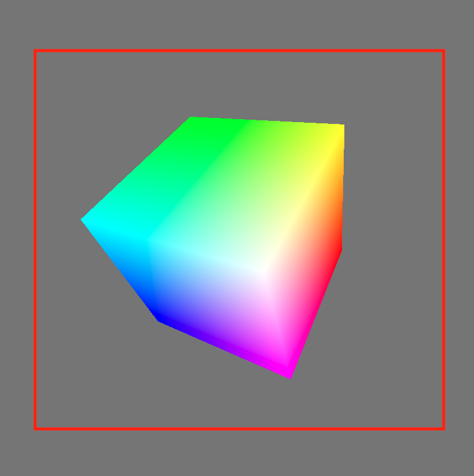
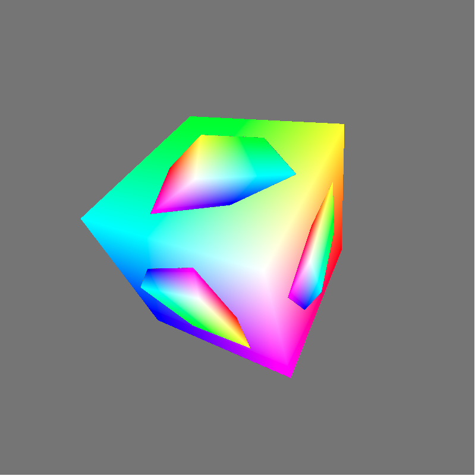
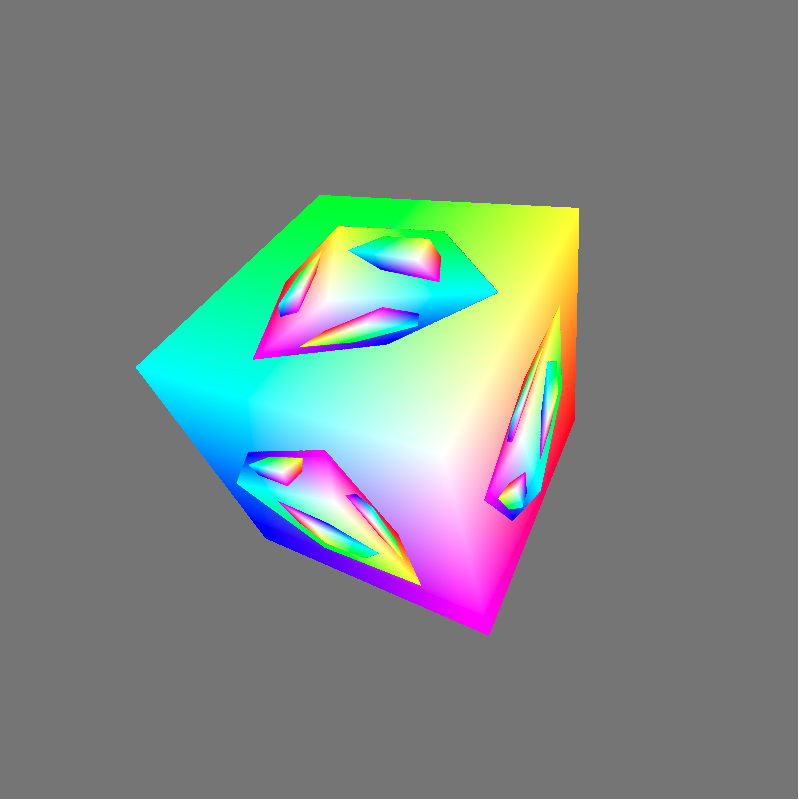

原文连接:https://www.cnblogs.com/chaogex/p/12097129.html
大家好，本文学习Chrome->webgpu-samplers->fractalCube示例。
上一篇博文：
WebGPU学习（八）：学习“texturedCube”示例
下一篇博文：
WebGPU学习（十）：介绍“GPU实现粒子效果”
学习fractalCube.ts
最终渲染结果：

该示例展示了如何用上一帧渲染的结果作为下一帧的纹理。
与“texturedCube”示例相比，该示例的纹理并不是来自图片，而是来自上一帧渲染的结果
下面，我们打开fractalCube.ts文件，分析相关代码：
传输顶点的color
它与“texturedCube”示例->“传递顶点的uv数据”类似，这里不再分析
上一帧渲染的结果作为下一帧的纹理
- 配置swapChain
因为swapChain保存了上一帧渲染的结果，所以将其作为下一帧纹理的source，它的usage需要增加GPUTextureUsage.COPY_SRC：
const swapChain = context.configureSwapChain({
device,
format: "bgra8unorm",
usage: GPUTextureUsage.OUTPUT_ATTACHMENT | GPUTextureUsage.COPY_SRC,
});- 创建空纹理和sampler，设置到uniform bind group中
代码如下：
const cubeTexture = device.createTexture({
size: { width: canvas.width, height: canvas.height, depth: 1 },
format: "bgra8unorm",
usage: GPUTextureUsage.COPY_DST | GPUTextureUsage.SAMPLED,
});
const sampler = device.createSampler({
magFilter: "linear",
minFilter: "linear",
});
const uniformBindGroup = device.createBindGroup({
layout: bindGroupLayout,
bindings: [
...
{
binding: 1,
resource: sampler,
}, {
binding: 2,
resource: cubeTexture.createView(),
}],
});- 绘制和拷贝
在每一帧中：
绘制带纹理的立方体；
将渲染结果拷贝到纹理中。
相关代码如下：
return function frame() {
const swapChainTexture = swapChain.getCurrentTexture();
renderPassDescriptor.colorAttachments[0].attachment = swapChainTexture.createView();
const commandEncoder = device.createCommandEncoder({});
const passEncoder = commandEncoder.beginRenderPass(renderPassDescriptor);
...
passEncoder.setBindGroup(0, uniformBindGroup);
...
passEncoder.draw(36, 1, 0, 0);
passEncoder.endPass();
commandEncoder.copyTextureToTexture({
texture: swapChainTexture,
}, {
texture: cubeTexture,
}, {
width: canvas.width,
height: canvas.height,
depth: 1,
});
device.defaultQueue.submit([commandEncoder.finish()]);
...
}分析shader代码
vertex shader与“texturedCube”示例相比，增加了color attribute：
const vertexShaderGLSL = `#version 450
...
layout(location = 1) in vec4 color;
...
layout(location = 0) out vec4 fragColor;
...
void main() {
...
fragColor = color;
...
}`;fragment shader的代码如下：
const fragmentShaderGLSL = `#version 450
layout(set = 0, binding = 1) uniform sampler mySampler;
layout(set = 0, binding = 2) uniform texture2D myTexture;
layout(location = 0) in vec4 fragColor;
layout(location = 1) in vec2 fragUV;
layout(location = 0) out vec4 outColor;
void main() {
vec4 texColor = texture(sampler2D(myTexture, mySampler), fragUV * 0.8 + 0.1);
// 1.0 if we're sampling the background
float f = float(length(texColor.rgb - vec3(0.5, 0.5, 0.5)) < 0.01);
outColor = mix(texColor, fragColor, f);
}`;第10行对fragUV进行了处理，我们会在分析渲染时间线中分析它。
第13行和第15行相当于做了if判断：
if(纹理颜色 === 背景色){
outColor = fragColor
}
else{
outColor = 纹理颜色
}这里之所以不用if判断而使用计算的方式，是为了减少条件判断，提高gpu的并行性
分析渲染时间线
下面分析下渲染的时间线：
第一帧
因为纹理为空纹理，它的颜色为背景色，所以fragment shader的outColor始终为fragColor，因此立方体的所有片段的颜色均为fragColor。
第一帧的渲染结果如下：

第一帧绘制结束后，渲染结果会被拷贝到纹理中。
第二帧
分析执行的fragment shader代码：
const fragmentShaderGLSL = `#version 450
layout(set = 0, binding = 1) uniform sampler mySampler;
layout(set = 0, binding = 2) uniform texture2D myTexture;
layout(location = 0) in vec4 fragColor;
layout(location = 1) in vec2 fragUV;
layout(location = 0) out vec4 outColor;
void main() {
vec4 texColor = texture(sampler2D(myTexture, mySampler), fragUV * 0.8 + 0.1);
// 1.0 if we're sampling the background
float f = float(length(texColor.rgb - vec3(0.5, 0.5, 0.5)) < 0.01);
outColor = mix(texColor, fragColor, f);
}`;- 第10行的“fragUV * 0.8 + 0.1”是为了取纹理坐标u、v方向的[0.1-0.9]部分，从而使纹理中立方体所占比例更大。
得到的纹理区域如下图的红色区域所示：

- 第13行和第15行代码，将纹理中的背景色替换为了fragColor，使纹理中立方体区域的颜色保持不变
第二帧的渲染结果如下：

- 第三帧
依次类推，第三帧的渲染结果如下：
